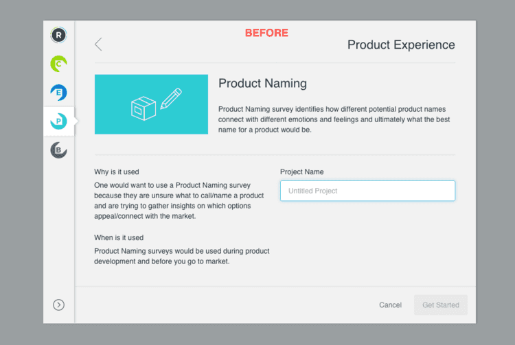
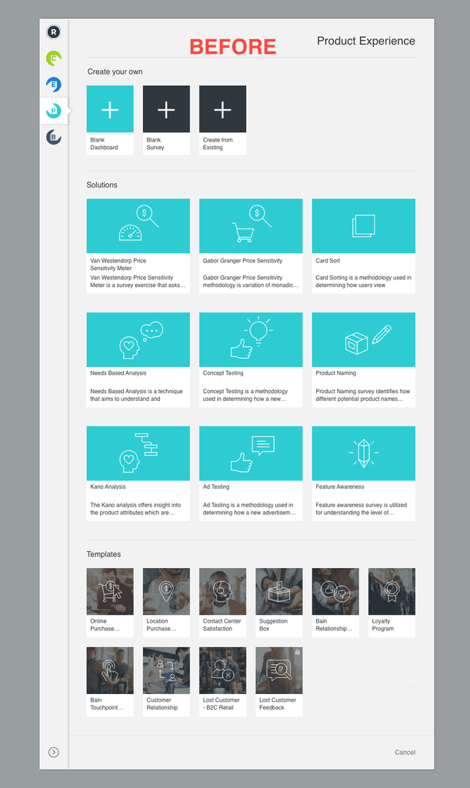
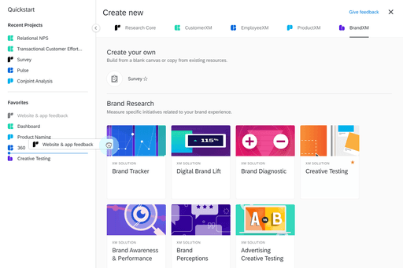
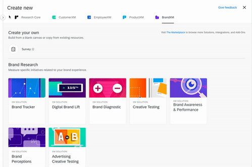
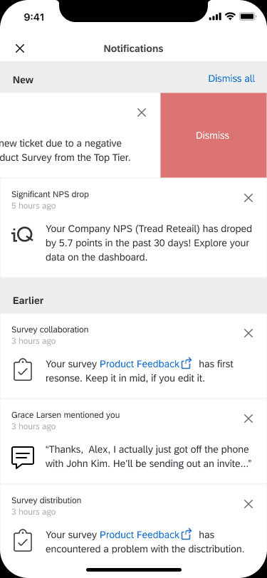
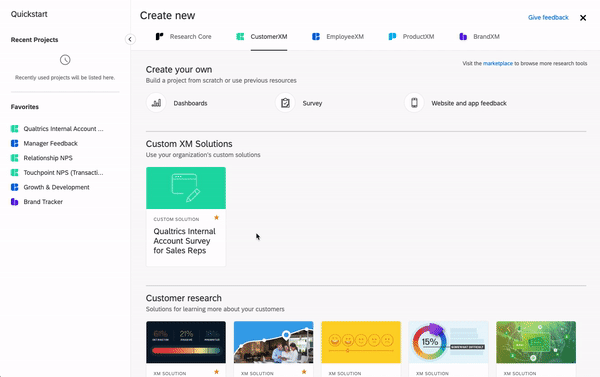
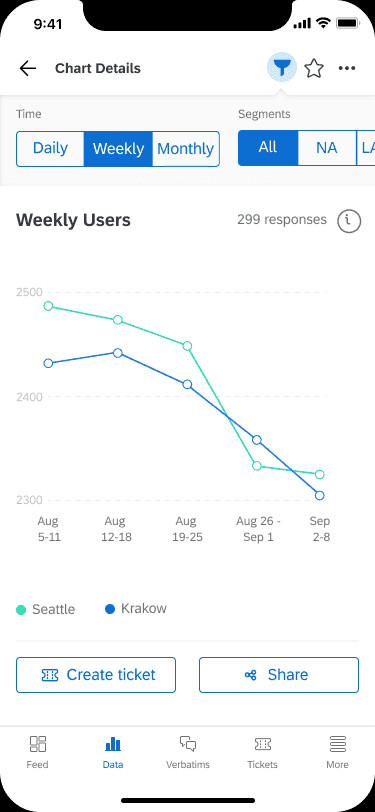
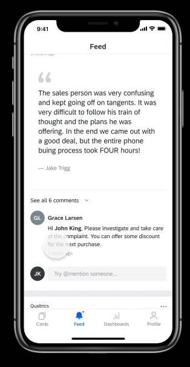
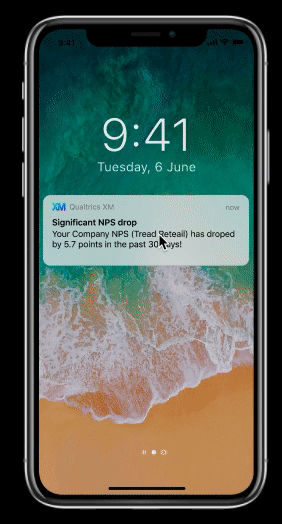

Qualtrics
I joined Qualtrics during a growth stretch. The mobile app became mine, basically from scratch — including Magic Link, which had to satisfy security after the acquisition — and Create UI, the screen that starts every survey.

I joined Qualtrics during a growth stretch. The mobile app became mine, basically from scratch — including Magic Link, which had to satisfy security after the acquisition — and Create UI, the screen that starts every survey.
Qualtrics is a dense desktop tool. We needed a mobile app that didn’t feel like a shrunk dashboard, plus a sign-in flow that would pass post-acquisition security.
I didn’t scale the desktop down. I picked what people actually open on a phone and rebuilt the rest for touch. Engineering was in Krakow. I was in Sketch, then Figma.
Create UI was a different job. I inherited the first screen of survey building — scratch or template — and it showed. I built high-fidelity prototypes, tested them, and wrote up the patterns so they could feed the roadmap.
Magic Link let people in without a password on their phone, and security signed off.
Mobile dashboards lead with the frequent stuff. The rest is one tap further. Targets are actually tappable.
Create UI got a clearer template picker and a less confusing path if you start from zero. Engineering built close to the prototypes. The mobile work is in the production app.








